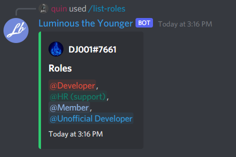

Slash command parameters
Slash commands can have a bunch of parameters, each their own type. Let's first go over the types of parameters we can have.
| Name | Description |
|---|---|
| SubCommand | A subcommand inside of a subcommand group. |
| SubCommandGroup | The parent command group of subcommands. |
| String | A string of text. |
| Integer | A number. |
| Boolean | True or False. |
| User | A user |
| Role | A role. |
| Channel | A channel, this includes voice text and categories |
| Mentionable | A role or a user. |
| File | A file |
Each one of the parameter types has its own DNET type in the SocketSlashCommandDataOption's Value field:
| Name | C# Type |
| --------------- | ------------------------------------------------ |
| SubCommand | NA |
| SubCommandGroup | NA |
| String | string |
| Integer | int |
| Boolean | bool |
| User | SocketGuildUser or SocketUser |
| Role | SocketRole |
| Channel | SocketChannel |
| Mentionable | SocketUser, SocketGuildUser, or SocketRole |
| File | IAttachment |
Let's start by making a command that takes in a user and lists their roles.
client.Ready += Client_Ready;
...
public async Task Client_Ready()
{
ulong guildId = 848176216011046962;
var guildCommand = new Discord.SlashCommandBuilder()
.WithName("list-roles")
.WithDescription("Lists all roles of a user.")
.AddOption("user", ApplicationCommandOptionType.User, "The users whos roles you want to be listed", isRequired: true);
try
{
await client.Rest.CreateGuildCommand(guildCommand.Build(), guildId);
}
catch(ApplicationCommandException exception)
{
var json = JsonConvert.SerializeObject(exception.Error, Formatting.Indented);
Console.WriteLine(json);
}
}

That seems to be working, now Let's handle the interaction.
private async Task SlashCommandHandler(SocketSlashCommand command)
{
// Let's add a switch statement for the command name so we can handle multiple commands in one event.
switch(command.Data.Name)
{
case "list-roles":
await HandleListRoleCommand(command);
break;
}
}
private async Task HandleListRoleCommand(SocketSlashCommand command)
{
// We need to extract the user parameter from the command. since we only have one option and it's required, we can just use the first option.
var guildUser = (SocketGuildUser)command.Data.Options.First().Value;
// We remove the everyone role and select the mention of each role.
var roleList = string.Join(",\n", guildUser.Roles.Where(x => !x.IsEveryone).Select(x => x.Mention));
var embedBuiler = new EmbedBuilder()
.WithAuthor(guildUser.ToString(), guildUser.GetAvatarUrl() ?? guildUser.GetDefaultAvatarUrl())
.WithTitle("Roles")
.WithDescription(roleList)
.WithColor(Color.Green)
.WithCurrentTimestamp();
// Now, Let's respond with the embed.
await command.RespondAsync(embed: embedBuiler.Build());
}

That has worked! Next, we will go over responding ephemerally.